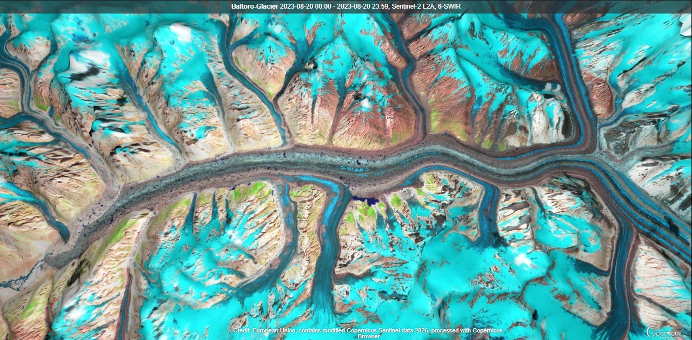

Imran Khan Ph.D.
Cryosphere • Glaciers and Glacial Lakes • Remote Sensing
I am a researcher studying glacial lakes and their long-term as well as seasonal dynamics, factors controlling the formation and seasonal evolution of supraglacial lakes, and glacier-lake-climate interactions. My work combines satellite remote sensing, geospatial analysis, and hazard modeling to improve understanding of outburst flood risks in high-mountain environments.

Baltoro Glacier
Source: ESA